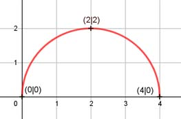

Aufgabe 126 f(x) = f(x) = (4x - x2)0,5 Kettenregel: f'(x) = 0,5 * (4 - 2x) * (4x - x2)-0,5 f'(x) = (2 - x) * (4x - x2)-0,5 Produktregel zweite Ableitung: u = 2 - x, u' = -1 v = (4x - x2)-0,5 Kettenregel: v' = - 0,5 * (4 - 2x) * (4x - x2)-1,5 v' = - (2 - x) * (4x - x2)-1,5 f''(x) = -1*(4x-x2)-0,5 - (2-x)*(4x-x2)-1,5*(2-x) 1 (2 - x) * (2 - x) f''(x) = - ------------- - ------------------- (4x - x2)0,5 (4x - x2)1,5 -1 (2 - x) * (2 - x) f''(x) = -------------- * (1 + -----------------) (4x - x2)0,5 (4x - x2) -1 4x-x2 + (4-4x+x2) f''(x) = -------------- * (-------------------) (4x - x2)0,5 4x - x2 -1 4 f''(x) = ------------- * (----------) (4 - x2)0,5 (4x - x2) 4 f''(x) = - ------------- (4x - x2)1,5 Zur Beurteilung, ob f'''(x) ≠ 0: (Begründung siehe Aufgabe 105) u = -4, u' = 0 u' 0 f'''(x) = --- = -------------- = 0 v (4x - x2)1,5 4x - x2 muss ≥ 0 sein, wegen Quadratwurzel. x * (4 - x) ≥ 0 x ≥ 0 4 - x ≥ 0 |+x x ≤ 4 --> Definitionsbereich: 0 ≤ x ≤ 4 Wertebereich: f(x) wird bei x = 2 am größten, (Extrempunkt) f(x) = ≥ 0 f(x) = f(x) = = 2 --> 0 ≤ f(x) ≤ 2 Symmetrie zur y-Achse bzw. zum Punkt (0|0): f(-x) = f(-x) = ≠ f(x) --> keine Achsensymmetrie -f(-x) = - ≠ f(x) --> keine Punktsymmetrie Nullstellen: f(x) = 0 = 0 |2 4x -x2 = 0 x * (4 - x) = 0 x1 = 0 4 - x = 0 |+x x2 = 4 N1(0|0), N2(4|0) Schnittpunkt mit der y-Achse: f(0) = = 0 Sy(0|0) Extrempunkte: f'(x) = 0 2 - x ------------- = 0 | *(4x -x2)0,5 (4x - x2)0,5 2 - x = 0 |+x x = 2, f(2) = 2 4 f''(2) = - ------------- < 0 --> Hochpunkt(2|2) (4x - x2)1,5 Wendepunkte: f''(x) = 0 -4 ------------- = 0 |*(16 - x2)1,5 (4x - x2)1,5 -4 = 0 Widerspruch --> keine Wendepunkte Graph:
